Cylinder Head Inspection/Repair
CYLINDER HEAD INSPECTION / REPAIR
1. Carry out cooling flaw detection on the cylinder head surface. Replace the cylinder head as necessary.
2. Inspect for the following and repair or replace as necessary.
1. Sunken valve seats
2. Excessive camshaft oil clearance and end play
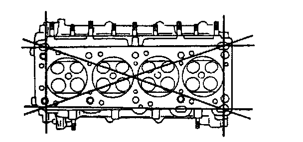
3. Measure the cylinder head for distortion in the six directions as shown.
Distortion 0.10 mm (0.004 inch) maximum
4. If the cylinder head distortion exceeds the maximum, repair by grinding height or replace the cylinder head. If the cylinder head height is not as specified, replace it.
Standard height 133.8 - 134.0 mm (5.268 - 5.275 inch)
Grinding 0.10 mm (0.004 inch) maximum
5. Measure the manifold contact surface distortion as shown.
Distortion 0.15 mm (0.006 inch) maximum
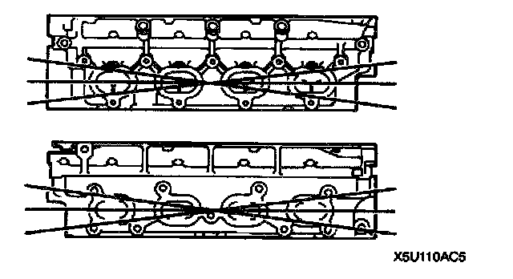
6. If the distortion exceeds the specification, grind the surface or replace the cylinder head.
Grinding 0.20 mm (0.008 inch) maximum
Valve Inspection
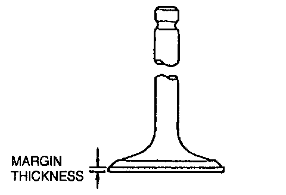
1. Measure the valve head margin thickness of each valve. Replace the valve as necessary.
Margin thickness
IN: 0.9 mm (0.035 inch) min.
EX: 1.0 mm (0.039 inch) min.
2. Measure the length of each valve. Replace the valve as necessary.
Standard length
IN: 101.71 - 102.31 mm (4.0044 - 4.0279 inch)
EX: 101.71 - 102.31 mm (4.0044 - 4.0279 inch)
Minimum length
IN: 101.61 mm (4.0004 inch)
EX: 101.61 mm (4.0004 inch)
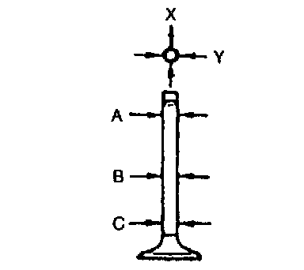
3. Measure the stem diameter of each valve in X and Y directions at the three points (A, B, and C) shown. Replace the valve as necessary.
Standard diameter
IN: 5.970 - 5.985 mm (0.2351 - 0.2356 inch)
EX: 5.965 - 5.980 mm (0.2349 - 0.2354 inch)
Minimum diameter
IN: 5.920 mm (0.2331 inch)
EX: 5.915 mm (0.2329 inch)
Valve Guide Inspection
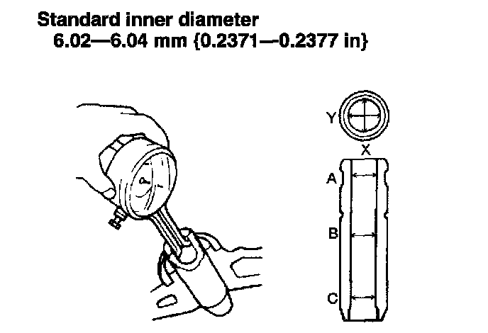
1. Measure the inner diameter of each valve guide in X and Y directions at the three points (A, B, and C) shown. Replace the valve guide as necessary.
Standard Inner diameter 6.02 - 6.04 mm (0.2371 - 0.2377 inch)

2. Measure the protrusion height (dimension A) of each valve guide without lower valve spring seat. Replace the valve guide as necessary.
Standard height 18.3 - 18.9 mm (0.721 - 0.744 inch)
Valve Guide Replacement
^ Note: Intake and exhaust valve guides are different.
Valve Guide Removal
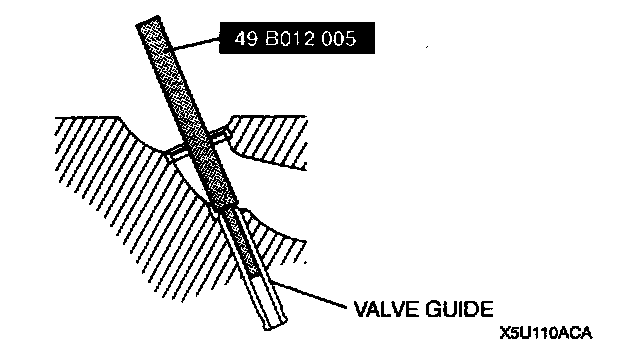
^ Remove the valve guide from the combustion chamber side by using the SST
Valve Guide Installation
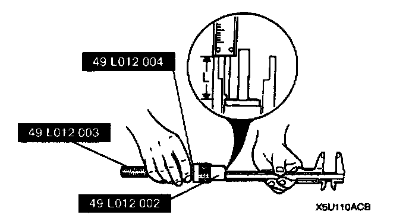
1. Assemble the SSTs so that depth L is as specified.
Depth L 18.3 - 18.9 mm (0.721 - 0.744 inch)
2. Tap the valve guide in from the side opposite the combustion chamber until the SST contacts the cylinder head.
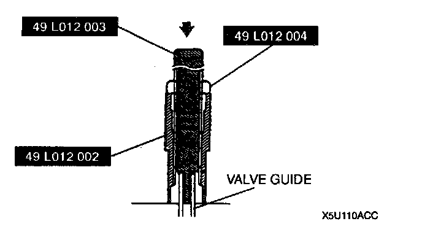
3. Verify that the valve guide projection height (dimension) is as specified.
Standard height 18.3 - 18.9 mm (0.721 - 0.744 inch)
Valve Seat Inspection / Repair
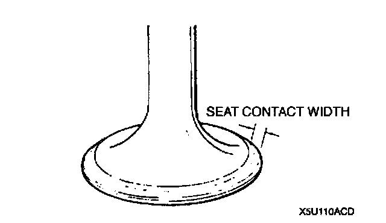
1. Measure the seat contact width. As necessary, resurface the valve seat by using a 45° valve seat cutter and/or resurface the valve face.
Standard width 0.8 - 1.4 mm (0.032 - 0.055 inch)
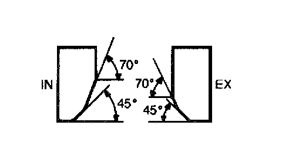
2. Verify that the valve seating position is at the center of the valve face.
1. If the seating position is too high, correct the valve seat by using a 70° cutter, and a 45° cutter.
2. If the seating position is too low, correct the valve seat by using a 45° cutter.
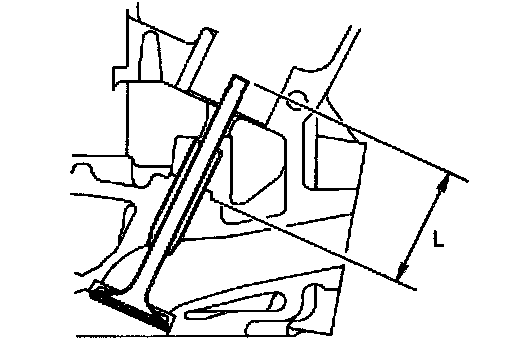
3. Inspect the sinking of the valve seat. Measure the protruding length (dimension L) of the valve stem. Replace the cylinder head as necessary.
Standard dimension L
IN: 45.0 mm (1.772 inch)
EX: 45.0 mm (1.772 inch)
Maximum dimension L
IN: 45.6 mm (1.795 inch)
EX: 45.6 mm (1.795 inch)
Valve Spring Inspection
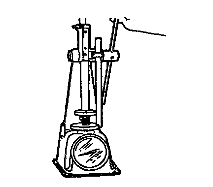
1. Apply pressing force to the pressure spring and measure the spring height. Replace the valve spring as necessary.
Pressing force
IN: 172.60 - 195.15 N (17.6 - 19.9 kgf, 38.72 - 43.78 inch lbs.)
EX: 172.60 - 195.15 N (17.6 - 19.9 kgf, 38.72 - 43.78 lbf)
Standard height
IN: 39.5 mm (1.56 inch)
EX: 39.5 mm (1.56 inch)
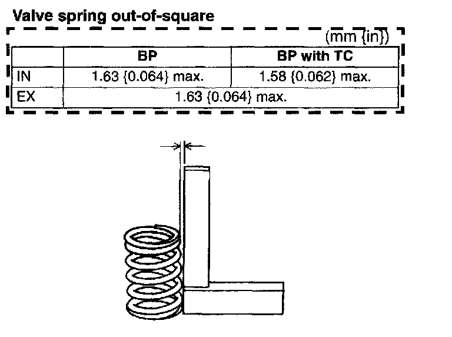
2. Measure the out-of-square of the valve spring. Replace the valve spring as necessary.
Valve spring out-of-square
BP
IN: 1.63 mm (0.064 inch) maximum
EX: 1.63 mm (0.064 inch) maximum
BP with TC
IN: 1.58 mm (0.062 inch) maximum
EX: 1.63 mm (0.064 inch) maximum
Camshaft Inspection
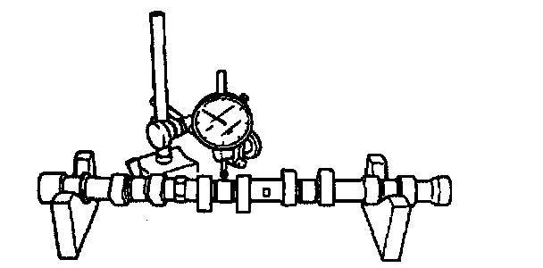
1. Set the No.1 and No.5 journals on V-blocks. Measure the camshaft runout. Replace the camshaft as necessary.
Runout 0.03 mm (0.0012 inch) maximum
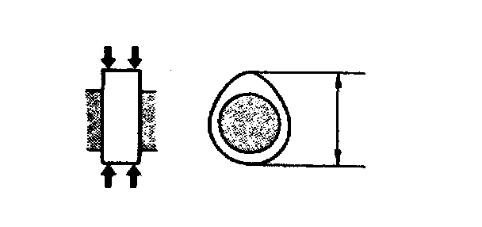
2. Measure the cam lobe height at the two points as shown. Replace the camshaft as necessary.
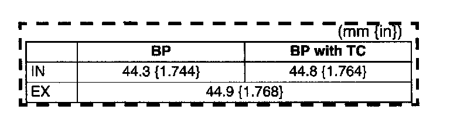
Standard height
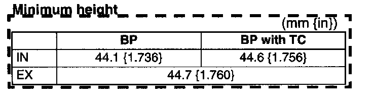
Minimum height
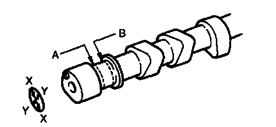
3. Measure the journal diameters in X and Y directions at the two points (A and B) as shown. Replace the camshaft as necessary.
Standard diameter 25.940 - 25.965 mm (1.0213 - 1.0222 inch)
Minimum diameter 25.910 mm (1.0201 inch)
Camshaft Oil Clearance Inspection
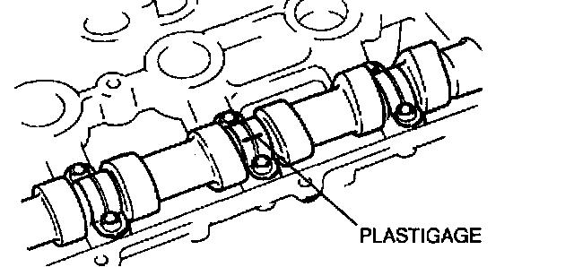
1. Position a plastigage on the top of the journals in the axial direction.
2. Install the camshaft cap.
3. Remove the camshaft cap.
4. Measure the oil clearance. Replace the cylinder head as necessary.
Standard clearance 0.035 - 0.081 mm (0.0014 - 0.0031 inch)
Maximum clearance 0.15 mm (0.006 inch)
Camshaft End Play Inspection
1. Install the camshaft cap.
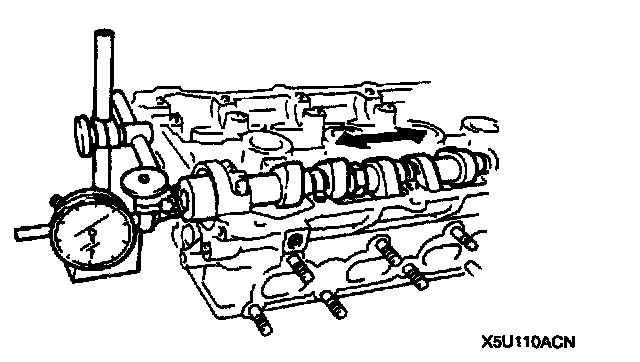
2. Measure the camshaft end play. Replace the cylinder head or camshaft as necessary.
Standard end play 0.057 - 0.127 mm (0.0023 - 0.0049 inch)
Maximum end play 0.20 mm (0.008 inch)
3. Remove the camshaft cap.
Tappet Inspection
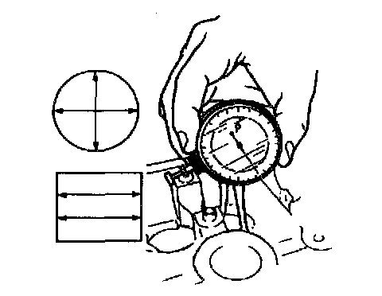
1. Measure the diameter of each tappet bore.
Standard diameter 30.000 - 30.025 mm (1.1811 - 1.1820 inch)
2. Measure the diameter of each tappet.
Standard diameter 29.959 - 29.975 mm (1.1795 - 1.1801 inch)
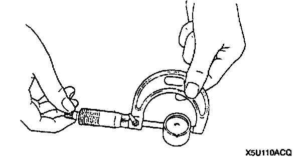
3. Calculate the clearance between the tappet and the related tappet bore. Replace the tappet or cylinder head as necessary.
Standard clearance 0.025 - 0.066 mm (0.00099 - 0.00259 inch)
Maximum clearance 0.180 mm (0.0071 inch)